A PAGE FROM THE NOTEBOOK
【本当？】人の体は何でできている？材料費2000万は本当？【人体錬成】
#人体#元素#お金#材料費#鋼の錬金術師IN THIS NOTE
この記事でわかること
人体の材料表：何がどれだけ入っているか
体重70kgの標準的な大人を元素に分けると、重さで一番多いのは酸素で約45kg（65%）です。次が炭素約13kg（18%）、水素約7kg（10%）、窒素約1.8kg、カルシウム約1.0kg、リン約0.78kgと続きます。この6つで体重のほぼ99%になります。その後にカリウムと硫黄が約140gずつ、ナトリウム約100g、塩素約95g、マグネシウム約19gが並びます。鉄は約4.2g、フッ素は約2.6g、亜鉛は約2.3gしかありません。
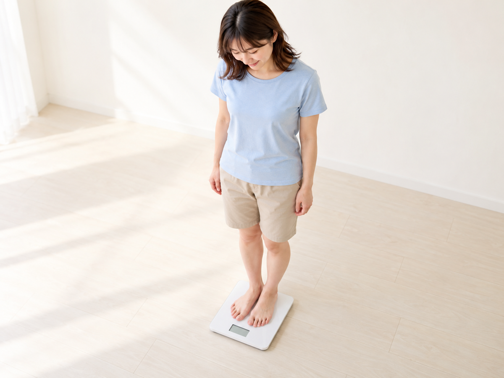
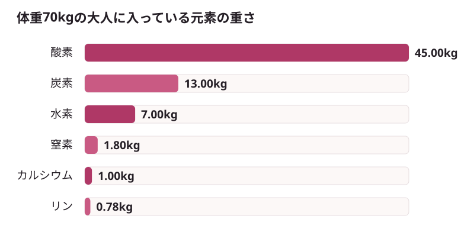
酸素が多いのは、体の大部分が水（H2O）だからです。大人の体重のうち水は平均約53%で、男性は約58%、女性は約48%と差があります。水の重さの約9割は酸素なので、重さでは酸素が1位になります。ところが原子の『数』で数えると、水素が全体の約6割を占めて1位です。重さで比べるか数で比べるかで順位が入れ替わる点は、動画の説明で混同しやすいので注意が必要です。
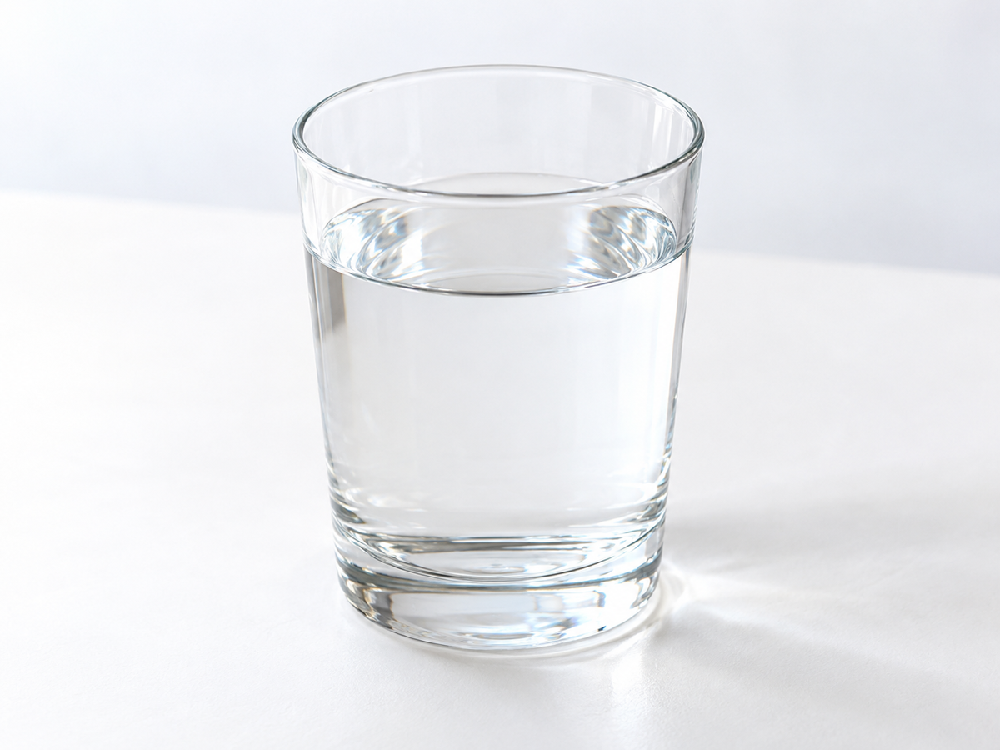
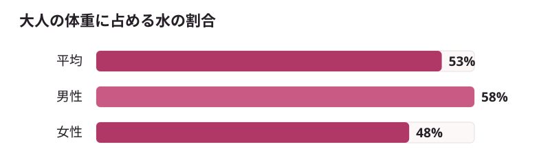
元素の『数』は、何を数えるかで3通りに分かれます。一つ目は体から見つかる元素の数で、約60種です（英国王立化学会の計算では59種）。体全体の原子の数は約7×10の27乗個と推定されています。二つ目は、生命や健康に積極的な役割を持つと考えられる元素で、約29種です。三つ目は『必須元素』で、ブライソンは伝統的に24種と紹介しています。ただし必須かどうかの判断は機関によって違います。たとえばフッ素は、オーストラリアとニュージーランドでは必須、米国とEUでは必須でなく、WHOは『可能性あり』としています。この3つの数は同じものとして扱えません。
限界として、数字は資料ごとに少しずつ違います。Wikipediaの表でも、窒素は2〜3%、カルシウムは1.1〜1.5%と幅を持たせています。体脂肪・筋肉・骨の量によって変わる平均値だと注記されています。BBC Science Focusは酸素46kg・炭素13kg・水素7kg・窒素2kg・カルシウム1kgとしていて、大まかな数字は同じです。動画で使うときは『約』を付け、70kgの標準モデルの話だと示すのが安全です。
補足として、2003年版アニメ『鋼の錬金術師』第1話には、大人1人分の材料を並べる台詞があります。Wikiquoteに載っている英語版の台詞を訳すと、水35L、炭素20kg、アンモニア4L、石灰1.5kg、リン800g、塩分250g、硝石100gです。そして子どもの小遣いでも全部買えると言います。石灰を酸化カルシウムと読むと、カルシウムは約1.07kgになります（私の計算）。これは実データの約1.0kgに近く、リン800gも実データの約0.78kgに近い数字です。一方、炭素20kgは実データの約13kgより多めです。ほかの材料は、形や濃度がはっきりしないので、レシピ全体の元素の配分は判断できません。
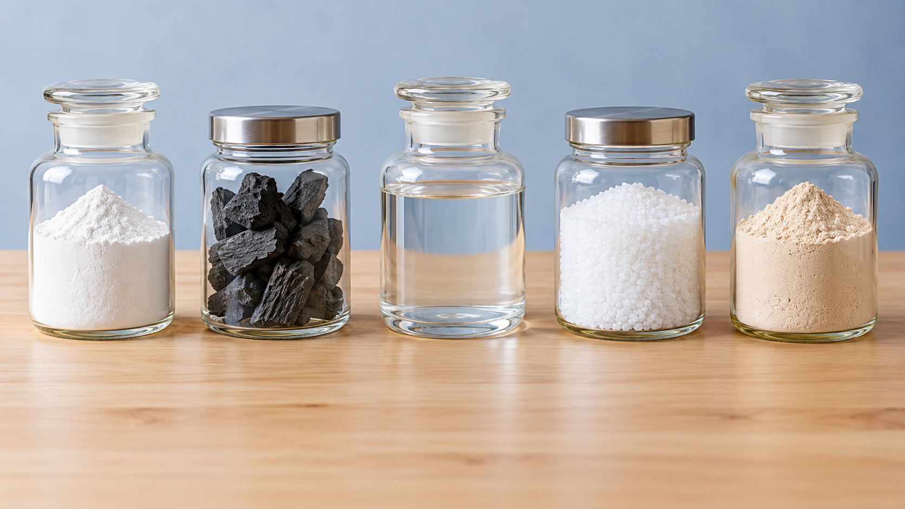
値段：約2000万円と約2万円は条件が違う
高い方の見積もりは、英国王立化学会（RSC）が2013年に出したものです。俳優ベネディクト・カンバーバッチの体を手本に、59種の元素を値段に直しました。この計算を紹介した記事によると、合計は9万6546.79ポンドです。同じ2013年11月の化学教育誌の記事も、同じRSCの計算を『9万6500ポンド超』と伝えています。つまりこの2つの記事は、別々に価格を調べた2件の見積もりではなく、同じ計算を伝える2つの資料です。取得した本文からは、このモデルの体重が70kgかどうかは確認できませんでした。2026年10月29日13:20時点の1ポンド＝約210.13円で換算すると約2029万円です。この額には人件費も英国の付加価値税（VAT）も入っていません。ブライソンは、それらを足せば20万ポンド（約4200万円）を大きく下回ることはないだろうと書いています。
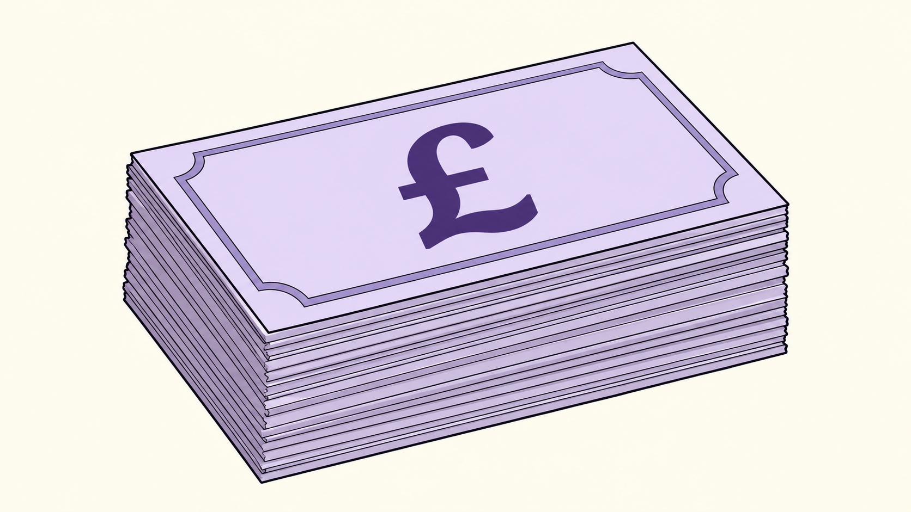
高額見積もりの内訳を見ると、数種類の元素に金額が集中しています。炭素約30ポンド（重さ。約13.6kg）だけで4万4300ポンド（約931万円）です。カルシウム・リン・カリウムの3つで、さらに4万7000ポンド（約988万円）かかります。この4元素で合計の約95%を占めます（私の計算）。逆に、酸素は8.90ポンド、水素は16ポンド少々、窒素は27ペンスと安いです。トリウムは1g約2000ポンドもしますが、体に入っている量がごくわずかなので21ペンスで済みます。
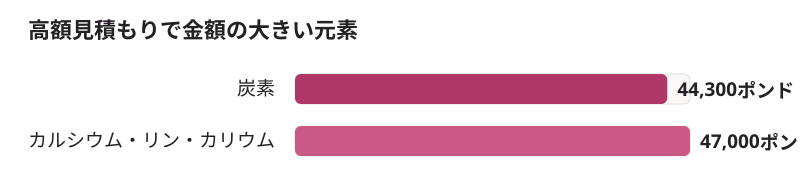
安い方は、BBC Science Focusの2026年10月25日の記事が示す、70kgの体の原料費の概算です。この案で買うのは、分離済みの元素ではなく、化合物や混合物です。酸素と水素は水52L（ほぼ無料）を自分で電気分解して取り出します。炭素は炭素分約70%の木炭で56ポンド（約1.2万円）です。窒素と硫黄は硫酸アンモニウム肥料10kgで23ポンド（約4800円）。残りの元素は10〜15ポンド（約2100〜3200円）です。合計で100ポンド未満（約2.1万円未満）としています。ただし、精製に使う設備・電力・作業の費用は内訳に入っていません。同じ記事は、豚1頭を競りで約200ポンド（約4.2万円）で買って材料にする案も挙げています。
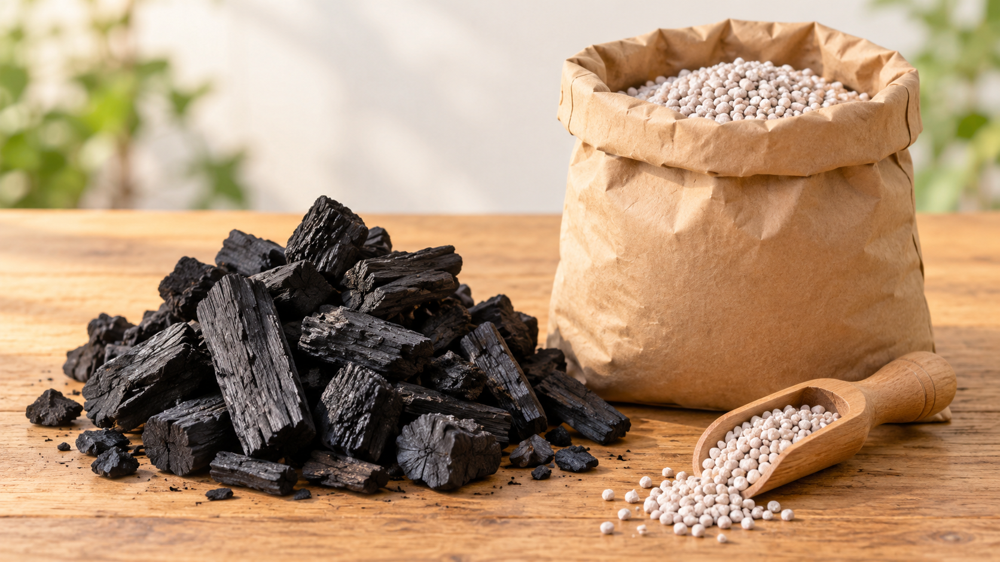
この概算には数量の問題があります。水52Lを約52kgとすると、含まれる水素は52×2÷18≒5.8kgです（私の計算）。記事が挙げる人体の水素7kgには足りません。水だけで水素7kgを確保するなら、約63Lが必要です。一方、52Lに含まれる酸素は約46kgで、記事が挙げる人体の酸素46kgとはほぼ一致します（私の計算）。肥料など、ほかの原料に含まれる水素を合わせた収支は、記事に示されていません。そのため約2万円は記事の大まかな見積もりで、全元素の必要量を確かめたうえでの購入費ではありません。
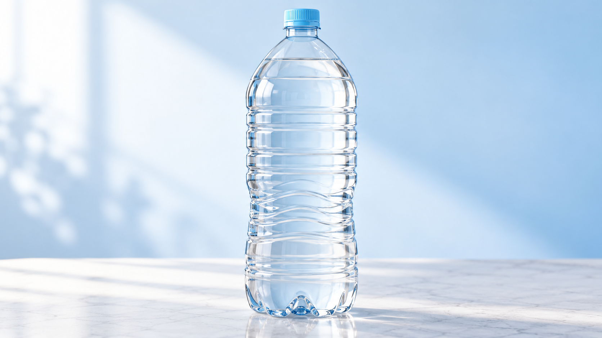
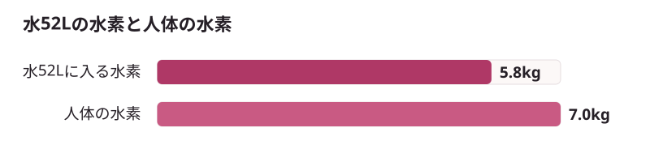
二つの額の差は、高い案が純度の高い元素を買う条件で、安い案が原料の形のまま買い、精製は自分でする条件だという違いから来ています。どの要因がどれだけ差に効いているかは、資料からは分けられません。ほかにも見積もりはあります。米国の科学番組NOVAは2012年に168ドルと計算したと紹介されていますが、計算方法は確認できませんでした。BBCの記事はブライソンの見積もりを『11万6000ポンド（15万ドル）超』と書いていますが、本の抜粋にある額は9万6546.79ポンドです。この差の理由は本文からは分かりません。RSCとBBCの額は英国のポンド建てで、日本の税込価格ではありません。RSCは2013年時点の価格です。
元素をそろえても人体にならない理由
高い案が値段を付けたのは純度の高い元素で、安い案は水・木炭・肥料といった原料です。どちらの案も、体を形づくる分子までは作っていません。BBCの記事は、本物の体はタンパク質や炭水化物などの複雑な有機分子でできていると指摘しています。そして、それらを合成する費用は材料費よりはるかに大きくなると書いています。約2万円で手に入るのは原料だけで、組み立ての費用は入っていません。
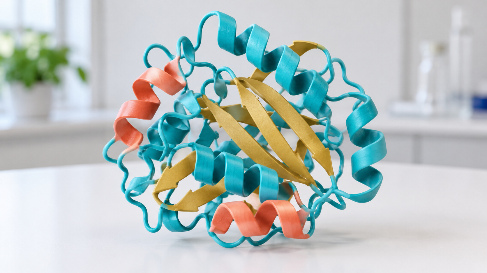
材料の形の差も大きいです。一般的な細胞を重さで見ると、水約65%、タンパク質約20%、脂質約12%、RNA約1%、DNA約0.1%です。木炭の炭素や肥料の窒素からアミノ酸を合成し、それを特定の順序につないでタンパク質にする必要があります。DNAも、ヌクレオチドを特定の順序につないで作らなければなりません。そのためには、長い化学合成の工程や、生きた生物の代謝が必要です。BBCの記事が豚を材料にする案を挙げるのは、分子レベルでは豚も人もほぼ同じだからです。
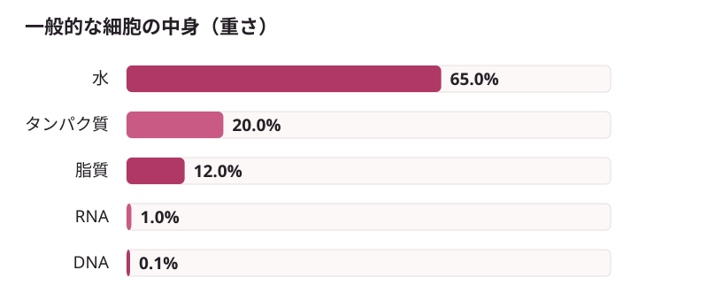
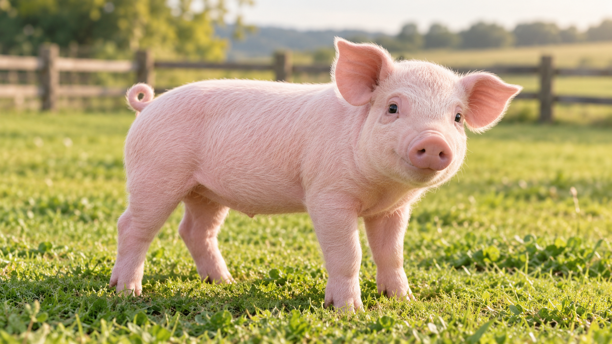
細胞の構成も複雑です。重さでは筋肉細胞が約29%、脂肪細胞が約19%を占めます。数では赤血球が約85%を占めます。骨などの細胞の外にある成分も、重さで約34%あります。体内の微生物の細胞数は人の細胞とほぼ同じとされます。元素の比率が同じでも、どの細胞がどこに並ぶかという配置の情報がなければ、体にはなりません。
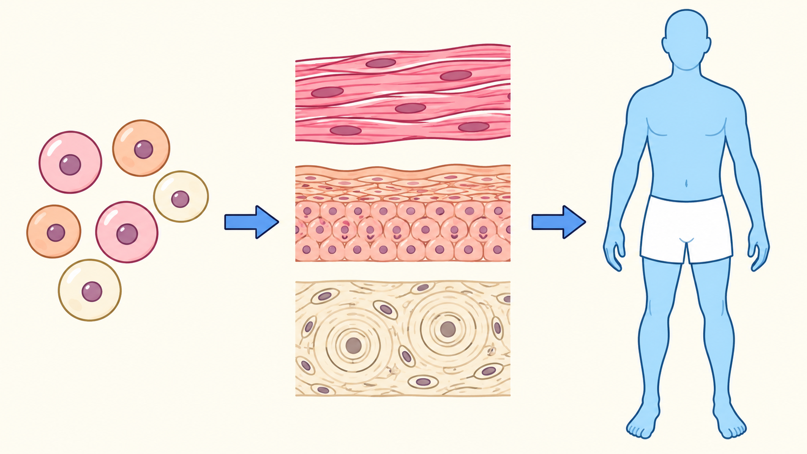
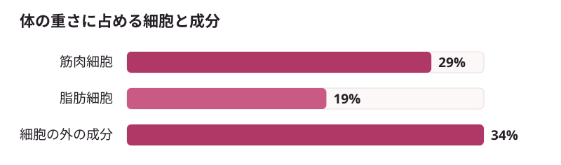
別の思考実験として、BBCの記事は、原料さえ使わずに原子そのものをエネルギーから作る場合を考えています。粒子加速器で作るという仮定で、エネルギーを約10の18乗ジュール（約1.75兆kWh）としています。ただし、この二つの数字は換算が合いません。10の18乗ジュールは約2780億kWhです。私の計算では、70kg×光速の2乗≒6.3×10の18乗ジュール≒1.75兆kWhになり、kWhの方の数字と合います。これは70kgの質量に相当するエネルギーの話です。今ある原料から体を組み立てる費用とは別の工程なので、上の段落の組み立て費用とは比べられません。
結論
70kgの体は酸素・炭素・水素など約60種の元素。2013年RSCの純品見積もりは約2000万円、2026年記事の水・炭・肥料案は約2万円（精製費別）で条件が違う。
見解
【分かった事実】体重70kgの体は酸素約45kg・炭素約13kg・水素約7kgが中心で、約60種の元素からできている。2013年のRSCの計算では、純度の高い元素をそろえると9万6546.79ポンド（約2029万円、税・人件費別）になる。その約95%を炭素・カルシウム・リン・カリウムが占める。2026年の記事の案では、水・木炭・肥料で100ポンド未満（約2.1万円）だが、精製の費用は別だ。しかも水52Lでは水素が約5.8kgで、7kgに届かない（私の計算）。【私の見解（推測を含む）】約2000万円と約2万円は、同じ品物の値段の幅ではない。買う物の形（純度の高い元素か原料か）と、精製を誰がするかという条件が違う見積もりだ。安い方は数量の確認も不十分な概算だ。動画では一つの価格帯として示さず、条件ごとに並べる方が正確だと思う。どちらの額にも、タンパク質やDNAを合成して細胞を並べる費用は入っていない。『原料は安く買えるが、人を作る方法は今はない』とまとめるのが、事実と矛盾しない結論だと考える。円の金額は2026年10月29日のレートで換算したもので、日本で買う税込価格ではない。